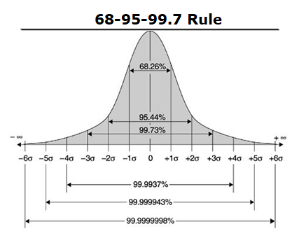

Six Sigma (6σ) Process Management: Overview

Overview
Before we can jump in to Six Sigma, we need to address a few standard terms first. These include the definition of a sigma itself, a process and a defect. Once we have those covered we can address the definition of Six Sigma.
What is a sigma? Sigma is a statistical measure of variation in a process. Sigma (the greek letter σ) is the symbol in statistics for standard deviation, a measure of the variation in a distribution of values.
What is a process? A basic concept of Six Sigma is process. Process is any repetitive action--in any manufacturing, services, or transactional environment. The six-sigma level of a process is calculated in terms of the number of defects in ratio to the number of opportunities for defects.
What is a defect? A defect is a measurable characteristic of the process or its output that is not within the acceptable and expected customer limits, i.e., not conforming with specifications. The specifications include lower specification limits (LSL) and upper specification limits (USL). Note: sometimes called upper and lower tolerance limits
What is Six Sigma?
Six sigima is more than one thing. It is a a level of quality. A problem-solving methodology. A management philosophy. The name Six Sigma is in reference to a statistical sigma that measures standard deviation. The goal is driving toward six standard deviations between the mean and the nearest specification limit. This basically means having as close to zero defects as possible. Here is what it looks like in a diagram:

A level of quality. Six Sigma is a measure of quality that strives for near perfection. It is a disciplined, data-driven approach and methodology for reducing process variation and eliminating defects--from manufacturing to transactional and from product to service. It means driving toward six standard deviations between the mean and the nearest specification limit. Achieving a six-sigma level of quality means that processes are producing only 3.4 defects per million opportunities (DPMO). In other words, they are working near perfection.
Note: The figure usually used for six sigma is 3.4 defects per million opportunities, which really equates to 4.5 sigma. That number is used though to account for process shifts over time.
A problem-solving methodology. Six Sigma can be applied to any process to eliminate the root causes of defects and associated costs.
A management philosophy. Six Sigma emphasizes selecting a project that provides the greatest return on investment (ROI) to a firm (different than cost savings). It is a customer-based approach that recognizes that defects decrease satisfaction and customer loyalty and increase costs. It focuses on the expectations of your customers. It also recognizes that company knowledge has gaps and misconceptions. Six Sigma is more than a quality system; it is a way of doing business.
Six Sigma sub-methodologies
- The Six Sigma DMAIC process (Define, Measure, Analyze, Improve, Control) is an improvement system for existing processes falling below specification and looking for incremental improvement.
Note: This is the most common and the one we will most frequently reference
- The Six Sigma DMADV process (Define, Measure, Analyze, Design, Verify) is an improvement system used to develop new processes or products at Six Sigma quality levels. It can also be employed if a current process requires more than just incremental improvement.
The Six Sigma transfer function Y=f(x)
The Six Sigma approach to problem solving uses a transfer function. A transfer function is a mathematical expression of the relationship between the inputs and outputs of a system. Y=f(x) is the relational transfer function that is used by all Six Sigma practitioners. The ‘Y’ refers to the measure or output of a process and it’s usually your primary metric or the measure of process performance that you’re trying to improve. F(x) means “function of x”. X’s are the factors or inputs that affect the “Y”. Combined, the Y=f(x) statement reads: “Y is a function of X.” or, in simple layman terms: “My process performance is dependent on certain X’s”. The objective in a Six Sigma project is to identify the critical factors or inputs (Xs) that have the most influence on the output (Y) and adjust or control them so that the Y improves.
Let’s look at a simple example of the relationship of Y=f(x) using a pizza delivery company that desires to meet customer expectations of on time delivery.
Primary Metric = on time pizza deliveries
“Y” = percent of on time deliveries
“f(x)” = X’s or factors that heavily influence on time delivery
x1: might be traffic
x2: might be the number of deliveries per driver dispatch
x3: could be the poor directions provided to the driver
x4: may be the reliability of the delivery vehicle
Six Sigma Roles and Responsibilities
Six Sigma identifies several key roles for its successful implementation:
- Executive Leadership includes the CEO and other members of top management. They are responsible for setting up a vision for Six Sigma implementation. They also empower the other role holders with the freedom and resources to explore new ideas for breakthrough improvements.
- Champions take responsibility for Six Sigma implementation across the organization in an integrated manner. The Executive Leadership draws them from upper management. Champions also act as mentors to Black Belts.
- Master Black Belts, identified by champions, act as in-house coaches on Six Sigma. They devote 100% of their time to Six Sigma. They assist champions and guide Black Belts and Green Belts. Apart from statistical tasks, they spend their time on ensuring consistent application of Six Sigma across various functions and departments.
- Black Belts operate under Master Black Belts to apply Six Sigma methodology to specific projects. They devote 100% of their time to Six Sigma. They primarily focus on Six Sigma project execution, whereas Champions and Master Black Belts focus on identifying projects/functions for Six Sigma.
- Green Belts are the employees who take up Six Sigma implementation along with their other job responsibilities, operating under the guidance of Black Belts. Some organizations use additional belt colors, such as Yellow Belts, for employees that have basic training in Six Sigma tools.
Learn More
- Six Sigma Define Phase
- Six Sigma Measure Phase
- Six Sigma Analyze Phase
- Six Sigma Improve Phase
- Six Sigma Control Phase
References
Hammer, M. (2002). Process management and the future of six sigma. MIT Sloan Management Review. Retrieved February 28, 2021 from https://sloanreview.mit.edu/article/process-management-and-the-future-of-six-sigma/ (Links to an external site.)
Walsh-Kelly, C. (2015). Flow chart/process flow diagram. Retrieved February 28, 2021 from https://www.med.unc.edu/neurosurgery/files/2018/10/Flow-chart-Process-Flow.pdf